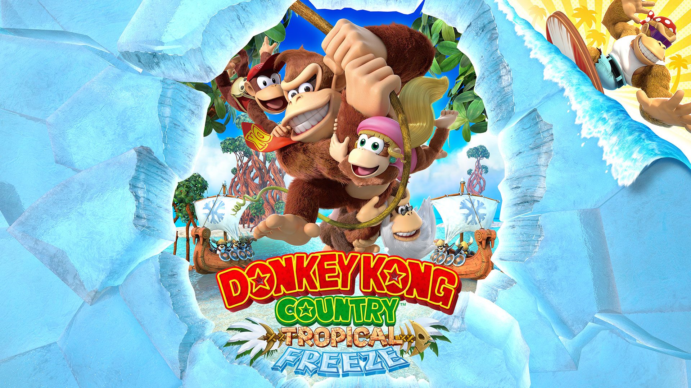

A História do Donkey Kong Country Tropical Freeze
imagem do jogo Donkey Kong Country Tropical Freeze
Donkey Kong Country: Tropical Freeze[a] é um jogo de plataforma de 2014 desenvolvido pela Retro Studios em colaboração com a Monster Games e publicado pela Nintendo para o console Wii U. A quinta parte da série Donkey Kong Country, Tropical Freeze é a sequência direta do jogo de Wii Donkey Kong Country Returns de 2010 e foi lançado em fevereiro de 2014. Uma porta aprimorada para o Nintendo Switch foi lançada em maio de 2018.
Donkey Kong e sua família devem se aventurar em cinco ilhas para salvar sua casa, a Ilha Donkey Kong, depois que ela é congelada pelos vilões Snowmads — um grupo de invasores dos mares do norte. Assim como seu antecessor, o jogo recebeu críticas positivas. Elogios foram direcionados ao design de nível, jogabilidade e trilha sonora, embora seu alto nível de dificuldade recebesse opiniões mais mistas.
O jogo continua a partir da jogabilidade da plataforma de rolagem lateral da série Donkey Kong Country e vê Donkey Kong e seus amigos viajando por sete ilhas diferentes, a fim de derrotar os Snowmads. Os controles são semelhantes ao jogo anterior, com a adição de ser capaz de arrancar itens do chão e pegar e lançar inimigos atordoados, e vários controladores podem ser usados com controles personalizáveis. [3][4] Como no jogo anterior, os jogadores controlam principalmente Donkey Kong, que é auxiliado por um companheiro, que fornece habilidades adicionais para Donkey Kong, ou pode ser controlado individualmente por um segundo jogador. Junto com Diddy Kong, que retorna com seu jet pack de barril para atravessar grandes lacunas, dois caracteres adicionais são adicionados; Dixie Kong e Cranky Kong. Dixie tem a capacidade de girar seu rabo de cavalo em uma hélice e descer lentamente pelo ar, com um impulso inicial de altura no início, permitindo que ela e Donkey Kong voem até plataformas ou itens fora de alcance. Cranky, em uma mecânica semelhante ao videogame DuckTales, pode usar sua bengala para saltar em superfícies perigosas, como espinhos espetados e alcançar áreas mais altas e derrotar certos inimigos que os outros Kongs não podem. [5] Encher um medidor 'Kong-POW' permite que Donkey Kong e seu parceiro realizem um movimento especial que derrota todos os inimigos na tela e os converte em itens dependendo do parceiro. [6]
O Super Guide do jogo anterior está ausente e é substituído por uma loja expandida, administrada pela Funky Kong, oferecendo vários itens de suporte, como a invencibilidade temporária. Como no jogo anterior, cada nível contém várias letras kong e peças de quebra-cabeça, algumas das quais exigem parceiros específicos para alcançar, que desbloqueiam vários bônus e níveis ocultos. O modo Time Attack também retorna, agora com tabelas de classificação online, permitindo que os jogadores visualizem replays de vídeo dos jogadores mais bem classificados.
A versão do jogo do Nintendo Switch apresenta Funky Kong como um novo personagem jogável. [7] No opcional mais fácil NOVO FUNKY MODE, Funky Kong é jogável sem possíveis companheiros, juntamente com uma opção de alternar entre ele e Donkey Kong. Ao contrário de Donkey Kong no modo normal do jogo, Funky Kong vem com cinco pontos de sucesso em vez de dois, enquanto ele também é capaz de saltar duas vezes, pairar no ar, ficar em espinhos e respirar debaixo d'água por um tempo ilimitado. Quando DK é jogado, ele pode ganhar um companheiro e cada Kong tem três pontos de acerto.
Enquanto os Kongs celebram o aniversário de Donkey Kong, sua ilha é atacada pelos Snowmads, invasores árticos. Seu líder, Lorde Fredrik, sopra um chifre que cria ventos congelados e um dragão de gelo. Os Kongs estão destruídos e os Snowmads tomam a congelada Ilha Donkey Kong. Os Kongs atravessam uma série de ilhas e voltam para a ilha de Donkey Kong. Eles atravessam a fortaleza congelada até encontrarem o líder dos Snowmads, Lorde Fredrik, que os desafia para uma batalha nas profundezas do vulcão. Donkey Kong dá o soco final para Lorde Fredrik, que bate nos navios Snowmad, derrotando os Snowmads. Donkey Kong sopra na buzina de Fredrik, produzindo uma brisa que descongela a Ilha Donkey Kong.